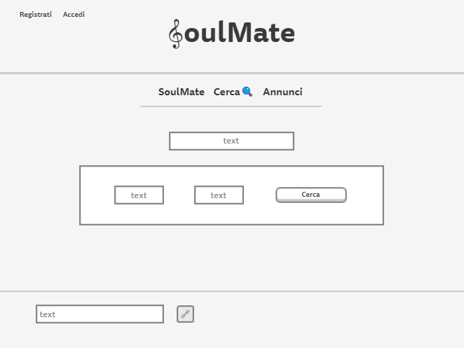

oul ate
oul ate
“SoulMate” è un sito unico e innovativo che offre un servizio di ricerca di compagni
per recarsi a eventi musicali in Italia e all’estero.
È adatto a tutte le età, aperto a chiunque desideri vivere esperienze musicali
coniugate alla conoscenza di altre persone.
Nel sito è possibile registrarsi ed effettuare l’accesso, sono inoltre proposte una home
con una panoramica sul suo funzionamento, una pagina dedicata alla ricerca,
una pagina in cui è possibile consultare e caricare annunci.
La grafica è semplice e ordinata perché anche il più inesperto nella tecnologia possa usufruire del servizio.
1.1. Obiettivi.
L’obiettivo del sito è la ricerca di persone con cui recarsi a eventi musicali in modo sicuro.
1.2. Target utente.
Il target utente primario include le persone tra i 18 e i 45 anni di età circa.
1.3. Competitors.
“Soulmate” è un sito unico che non presenta competitors che affrontano lo stesso tema, per questo è possibile
analizzare solo siti con temi diversi ma che offrono servizi sommariamente simili,
come siti d’incontri e ricerca di artisti:
-Lovepedia: sito d’incontri composto da varie sezioni: registrazione e accesso, spiegazione del servizio offerto,
dati e statistiche inerenti agli utenti iscritti;
-Villaggiomusicale: sito dedicato alla ricerca di artisti come dj, band, strumentisti di ogni genere, cantanti,
in base alla città, al nome dell’artista, alla vicinanza dall’utente.
2.1. Architettura del sito
2.2. Wireframe
Wireframe pagina "SoulMate"

Wireframe pagina "Cerca"
Wireframe pagina "Annunci"
Wireframe modulo "Registrati" e "Accedi"
2.3. Look and Feel.
Le mie scelte per la grafica sono state:
-Font “Oswald” con un peso di 500 utilizzato in ogni sezione per creare impatto visivo, font “Oswald” regular per il
testo all’interno delle card, in quanto il contenuto è meno rilevante rispetto al resto;
-Testo interamente in nero perché i contenuti saltino subito all’occhio dell’utente;
-In ogni pagina gli elementi sono sistemati al centro per dare un senso di equilibrio e ordine che aiuti l’utente a orientarsi nel sito;
-Colori: bianco (per lo sfondo del body) per trasmettere ordine ed equilibrio; varie sfumature del “cornflowerblue”,
una tonalità dell’azzurro intensa e luminosa, per esprimere leggerezza e freschezza, essendo un sito dedicato al tema dell’intrattenimento;
infine un’ulteriore tonalità di azzurro più brillante per i bottoni affinchè si notino istantaneamente, in quanto consentono
le azioni caratterizzanti del sito (cercare, pubblicare).
3.1. Utilizzo dei linguaggi HTML e CSS.
3.2. Strumenti tecnologici utilizzati a supporto della progettazione web:
-Sublime text come text editor
-Bootstrap per alcuni elementi della grafica (box annunci, box ricerca) e per il modal form di registrazione e accesso al sito
-Freestock per tutte le foto dei soggetti
-Font awsome per le icone
- Google Fonts per la font
- LibreOffice per il disegno (cuore con chiave di violino)
-Instagram per la pubblicità
-Google Analytics per tracciare le visite
-Github per la pubblicazione
1. Background
-Il sito “Lovepedia”, offre un servizio di dating online con la possibilità, per gli utenti, di contattarsi
a vicenda ed eventualmente incontrarsi. Sul sito è possibile anche consultare un magazine inerente ai
più disparati temi e accedere ad una sezione dedicata ai vari “annunci” degli utenti.
Punti forti: facilità di iscrizione, possibilità di filtrare la ricerca di utenti con cui chattare.
Punti deboli: grafica confusionaria, identità non ben definita (scarso uso dei colori rosa e azzurro),
all’interno del magazine presenza di articoli poco attinenti al tema del sito.
-Il sito “villaggiomusicale” offre un servizio di ricerca di artisti di ogni genere in ogni zona dell’Italia;
è possibile inoltre visionare le nuove iscrizioni e filtrare le ricerche.
Punti forti: presenza di svariati filtri durante il processo di ricerca per avere risultati più idonei alle necessità dell’utente;
barra di ricerca in alto e già nella home;
Punti deboli: presenza di troppe sezioni in ogni pagina, le quali possono provocare confusione nell’utente;
sito tendenzialmente dispersivo a causa della forte quantità di servizi offerti.
A fronte dell’analisi di questi due competitors ho deciso di adottare una grafica semplice e lineare,
che puntasse sul titolo per dare identità al sito,
e di offrire solamente i servizi necessari per la sua fruizione, senza divagare dall’obiettivo primario del sito;
ispirandomi ai due competitors ho però deciso di inserire la possibilità di cercare eventi musicali in base sia al
nome dell’artista sia della città e di impostare, per una maggiore sicurezza, l’obbligo di registrazione o
accesso per contattare gli altri utenti e per pubblicare annunci.
2.Obiettivi comunicativi
“SoulMate” vuole offrire un servizio di ricerca di persone con cui recarsi a eventi musicali in totale sicurezza.
È perfetto per chi si trova da solo a ridosso della data di un evento e per chi desidera fare nuove conoscenze;
è incentrato sulla condivisione di momenti.
Mi sono prefissata di raggiungere almeno 20 like sul post che pubblicherò sul social Instagram e di raggiungere almeno 50 visite al sito.
3.Target audience e messaggio
Il target utente primario include le persone tra i 18 e i 45 anni di età circa poiché in base ai dati rilevati
su siti d’incontri sono più propensi alla conoscenza di individui online;
il target utente secondario è rappresentato da chiunque abbia familiarità con la tecnologia e che
sia quindi in grado di orientarsi su un sito: normalmente circa fino ai 70 anni.
È ovviamente presente anche l’utente casuale.
Per la pubblicità di “SoulMate” il primo gruppo viene raggiunto soprattutto attraverso i social (instagram, facebook);
il secondo gruppo invece è comunemente informato attraverso passaparola e Whatsapp.
Il sito è incentrato sulla ricerca di persone per eventi musicali di ogni genere, non vuole quindi trasmettere un messaggio
ma piuttosto offrire un servizio fruibile da tutti.
4.Promozione
Promuoverò il sito web realizzato online sul social instagram, attraverso il passaparola e tramite Whatsapp.
5.Valutazione dei risultati
Visite al sito
Like a post di Instagram
I due obiettivi che mi ero preposta sono stati superati: ho ricevuto 26 like sul post di Instagram
(l'obiettivo era di 20) e 55 visite da utenti unici al sito (l'obiettivo era di 50).
Ho raggiunto il target utente primario grazie al post su instagram e il target secondario attraverso il passaparola e Whatsapp.